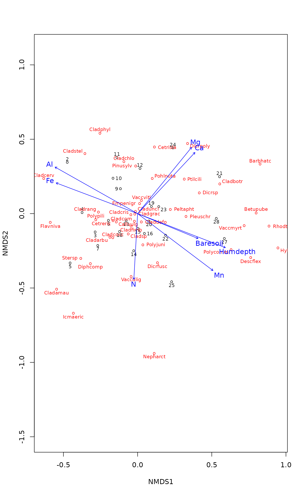
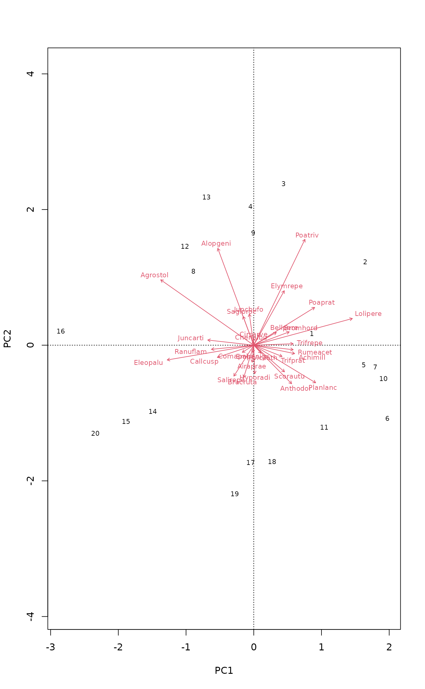

Community Ecology Package: Ordination, Diversity and Dissimilarities
vegan-package.RdThe vegan package provides tools for descriptive community ecology. It has most basic functions of diversity analysis, community ordination and dissimilarity analysis. Most of its multivariate tools can be used for other data types as well.
Details
The functions in the vegan package contain tools for diversity analysis, ordination methods and tools for the analysis of dissimilarities. Together with the labdsv package, the vegan package provides most standard tools of descriptive community analysis. Package ade4 provides an alternative comprehensive package, and several other packages complement vegan and provide tools for deeper analysis in specific fields. Package BiodiversityR provides a GUI for a large subset of vegan functionality.
The vegan package is developed at GitHub (https://github.com/vegandevs/vegan/). GitHub provides up-to-date information and forums for bug reports.
Most important changes in vegan documents can be read with
news(package="vegan") and vignettes can be browsed with
browseVignettes("vegan"). The vignettes include a vegan
FAQ, discussion on design decisions, short introduction to ordination
and discussion on diversity methods.
To see the preferable citation of the package, type
citation("vegan").
Examples
### Example 1: Unconstrained ordination ## NMDS data(varespec) data(varechem) ord <- metaMDS(varespec)#> Square root transformation #> Wisconsin double standardization #> Run 0 stress 0.1843196 #> Run 1 stress 0.1962455 #> Run 2 stress 0.2114009 #> Run 3 stress 0.2156835 #> Run 4 stress 0.1967394 #> Run 5 stress 0.2126569 #> Run 6 stress 0.2283012 #> Run 7 stress 0.2127526 #> Run 8 stress 0.2005517 #> Run 9 stress 0.1962455 #> Run 10 stress 0.1969809 #> Run 11 stress 0.18458 #> ... Procrustes: rmse 0.04941085 max resid 0.1577968 #> Run 12 stress 0.1948419 #> Run 13 stress 0.2088296 #> Run 14 stress 0.2100667 #> Run 15 stress 0.3841083 #> Run 16 stress 0.2382236 #> Run 17 stress 0.2175651 #> Run 18 stress 0.1948415 #> Run 19 stress 0.1962453 #> Run 20 stress 0.1967393 #> *** No convergence -- monoMDS stopping criteria: #> 20: stress ratio > sratmax#> #> ***VECTORS #> #> NMDS1 NMDS2 r2 Pr(>r) #> N -0.05038 -0.99873 0.2080 0.090 . #> P 0.68719 0.72647 0.1755 0.131 #> K 0.82745 0.56155 0.1657 0.130 #> Ca 0.75024 0.66116 0.2809 0.028 * #> Mg 0.69691 0.71716 0.3492 0.012 * #> S 0.27645 0.96103 0.1774 0.108 #> Al -0.83757 0.54633 0.5155 0.001 *** #> Fe -0.86169 0.50743 0.3999 0.005 ** #> Mn 0.80219 -0.59707 0.5323 0.001 *** #> Zn 0.66537 0.74651 0.1779 0.136 #> Mo -0.84867 0.52892 0.0517 0.572 #> Baresoil 0.87189 -0.48971 0.2494 0.050 * #> Humdepth 0.92623 -0.37696 0.5590 0.002 ** #> pH -0.79900 0.60133 0.2625 0.049 * #> --- #> Signif. codes: 0 ‘***’ 0.001 ‘**’ 0.01 ‘*’ 0.05 ‘.’ 0.1 ‘ ’ 1 #> Permutation: free #> Number of permutations: 999 #> #>### Example 2: Constrained ordination (RDA) ## The example uses formula interface to define the model data(dune) data(dune.env) ## No constraints: PCA mod0 <- rda(dune ~ 1, dune.env) mod0#> Call: rda(formula = dune ~ 1, data = dune.env) #> #> Inertia Rank #> Total 84.12 #> Unconstrained 84.12 19 #> Inertia is variance #> #> Eigenvalues for unconstrained axes: #> PC1 PC2 PC3 PC4 PC5 PC6 PC7 PC8 #> 24.795 18.147 7.629 7.153 5.695 4.333 3.199 2.782 #> (Showing 8 of 19 unconstrained eigenvalues) #>plot(mod0)#> Call: rda(formula = dune ~ A1 + Moisture + Management + Use + Manure, #> data = dune.env) #> #> Inertia Proportion Rank #> Total 84.1237 1.0000 #> Constrained 63.2062 0.7513 12 #> Unconstrained 20.9175 0.2487 7 #> Inertia is variance #> Some constraints were aliased because they were collinear (redundant) #> #> Eigenvalues for constrained axes: #> RDA1 RDA2 RDA3 RDA4 RDA5 RDA6 RDA7 RDA8 RDA9 RDA10 RDA11 #> 22.396 16.208 7.039 4.038 3.760 2.609 2.167 1.803 1.404 0.917 0.582 #> RDA12 #> 0.284 #> #> Eigenvalues for unconstrained axes: #> PC1 PC2 PC3 PC4 PC5 PC6 PC7 #> 6.627 4.309 3.549 2.546 2.340 0.934 0.612 #>plot(mod1)## Automatic selection of variables by permutation P-values mod <- ordistep(mod0, scope=formula(mod1))#> #> Start: dune ~ 1 #> #> Df AIC F Pr(>F) #> + Management 3 87.082 2.8400 0.005 ** #> + Moisture 3 87.707 2.5883 0.005 ** #> + Manure 4 89.232 1.9539 0.005 ** #> + A1 1 89.591 1.9217 0.075 . #> + Use 2 91.032 1.1741 0.295 #> --- #> Signif. codes: 0 ‘***’ 0.001 ‘**’ 0.01 ‘*’ 0.05 ‘.’ 0.1 ‘ ’ 1 #> #> Step: dune ~ Management #> #> Df AIC F Pr(>F) #> - Management 3 89.62 2.84 0.005 ** #> --- #> Signif. codes: 0 ‘***’ 0.001 ‘**’ 0.01 ‘*’ 0.05 ‘.’ 0.1 ‘ ’ 1 #> #> Df AIC F Pr(>F) #> + Moisture 3 85.567 1.9764 0.005 ** #> + Manure 3 87.517 1.3902 0.120 #> + A1 1 87.424 1.2965 0.150 #> + Use 2 88.284 1.0510 0.435 #> --- #> Signif. codes: 0 ‘***’ 0.001 ‘**’ 0.01 ‘*’ 0.05 ‘.’ 0.1 ‘ ’ 1 #> #> Step: dune ~ Management + Moisture #> #> Df AIC F Pr(>F) #> - Moisture 3 87.082 1.9764 0.010 ** #> - Management 3 87.707 2.1769 0.005 ** #> --- #> Signif. codes: 0 ‘***’ 0.001 ‘**’ 0.01 ‘*’ 0.05 ‘.’ 0.1 ‘ ’ 1 #> #> Df AIC F Pr(>F) #> + Manure 3 85.762 1.1225 0.250 #> + A1 1 86.220 0.8359 0.645 #> + Use 2 86.842 0.8027 0.705 #>mod#> Call: rda(formula = dune ~ Management + Moisture, data = dune.env) #> #> Inertia Proportion Rank #> Total 84.1237 1.0000 #> Constrained 46.4249 0.5519 6 #> Unconstrained 37.6988 0.4481 13 #> Inertia is variance #> #> Eigenvalues for constrained axes: #> RDA1 RDA2 RDA3 RDA4 RDA5 RDA6 #> 21.588 14.075 4.123 3.163 2.369 1.107 #> #> Eigenvalues for unconstrained axes: #> PC1 PC2 PC3 PC4 PC5 PC6 PC7 PC8 PC9 PC10 PC11 PC12 PC13 #> 8.241 7.138 5.355 4.409 3.143 2.770 1.878 1.741 0.952 0.909 0.627 0.311 0.227 #>plot(mod)#> Permutation test for rda under reduced model #> Permutation: free #> Number of permutations: 999 #> #> Model: rda(formula = dune ~ Management + Moisture, data = dune.env) #> Df Variance F Pr(>F) #> Model 6 46.425 2.6682 0.001 *** #> Residual 13 37.699 #> --- #> Signif. codes: 0 ‘***’ 0.001 ‘**’ 0.01 ‘*’ 0.05 ‘.’ 0.1 ‘ ’ 1## Permutation test of "type III" effects, or significance when a term ## is added to the model after all other terms anova(mod, by = "margin")#> Permutation test for rda under reduced model #> Marginal effects of terms #> Permutation: free #> Number of permutations: 999 #> #> Model: rda(formula = dune ~ Management + Moisture, data = dune.env) #> Df Variance F Pr(>F) #> Management 3 18.938 2.1769 0.006 ** #> Moisture 3 17.194 1.9764 0.007 ** #> Residual 13 37.699 #> --- #> Signif. codes: 0 ‘***’ 0.001 ‘**’ 0.01 ‘*’ 0.05 ‘.’ 0.1 ‘ ’ 1## Plot only sample plots, use different symbols and draw SD ellipses ## for Managemenet classes plot(mod, display = "sites", type = "n")#> #> Family: gaussian #> Link function: identity #> #> Formula: #> y ~ s(x1, x2, k = 10, bs = "tp", fx = FALSE) #> #> Estimated degrees of freedom: #> 1.28 total = 2.28 #> #> REML score: 3.00623### Example 3: analysis of dissimilarites a.k.a. non-parametric ### permutational anova adonis(dune ~ ., dune.env)#> #> Call: #> adonis(formula = dune ~ ., data = dune.env) #> #> Permutation: free #> Number of permutations: 999 #> #> Terms added sequentially (first to last) #> #> Df SumsOfSqs MeanSqs F.Model R2 Pr(>F) #> A1 1 0.7230 0.72295 5.2038 0.16817 0.002 ** #> Moisture 3 1.1871 0.39569 2.8482 0.27613 0.004 ** #> Management 3 0.9036 0.30121 2.1681 0.21019 0.023 * #> Use 2 0.0921 0.04606 0.3315 0.02143 0.979 #> Manure 3 0.4208 0.14026 1.0096 0.09787 0.456 #> Residuals 7 0.9725 0.13893 0.22621 #> Total 19 4.2990 1.00000 #> --- #> Signif. codes: 0 ‘***’ 0.001 ‘**’ 0.01 ‘*’ 0.05 ‘.’ 0.1 ‘ ’ 1#> #> Call: #> adonis(formula = dune ~ Management + Moisture, data = dune.env) #> #> Permutation: free #> Number of permutations: 999 #> #> Terms added sequentially (first to last) #> #> Df SumsOfSqs MeanSqs F.Model R2 Pr(>F) #> Management 3 1.4686 0.48953 3.7907 0.34161 0.001 *** #> Moisture 3 1.1516 0.38387 2.9726 0.26788 0.003 ** #> Residuals 13 1.6788 0.12914 0.39051 #> Total 19 4.2990 1.00000 #> --- #> Signif. codes: 0 ‘***’ 0.001 ‘**’ 0.01 ‘*’ 0.05 ‘.’ 0.1 ‘ ’ 1